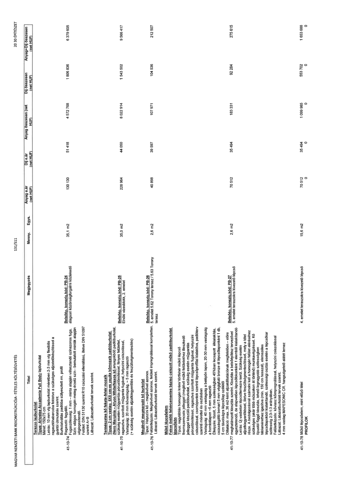

| Tétel | Megjegyzés | Menny. | Egys. | Anyag e.ár (net HUF) | Díj e.ár (net HUF) | Anyag összesen (net HUF) | Díj összesen (net HUF) | Anyag+Díj összesen (net HUF) |
|---|---|---|---|---|---|---|---|---|
| 41-10-74 Terazzo lapburkolat Típus: Ariostea Accademia Full Body lapburkolat Méret: 150x75 cm Leírás: 10 mm vtg lapburkolat méretben 2-3 mm vtg flexibilis ragasztóhabarcsba fektetve a szükséges aljzat-előkészítéssel a gyártói útmutatás szerint. Burkolatváltás padlóba süllyesztett rm. profil Ragasztó: fagyálló. Fugaszélesség: 1 mm - minta alapján választandó színazonos fuga. Szín: világos homogén meleg érzetű szín - bemutatott minták alapján véglegesítendő. Felület: DIN 51130 szerint R10 csúszási ellenállású, illetve DIN 51097 szerint A+B Lábazat: Lábazatburkolati tervek szerint. | Belsőép. konszig.kód: PB-24 alagsori közönségforgalmi közlekedő | 35,1 | m2 | 130 130 | 51 418 | 4 572 768 | 1 806 836 | 6 379 605 |
| 41-10-75 Természetes kő fekete-fehér mozaik Típus: 2 cm vastag 5X5 cm-es nemita kőmozaik padlóburkolat (Nero Marquinia - Afyon White/Naxos kő anyagokból) padlóburkolat, szükség esetén műgyantás pórustömítéssel, fényes felülettel, ragasztva, szorított műgyanta fugával, helyszíni csiszolással. Vastagság: 20 mm kővastagság, ~ 5 mm ragasztó (+ szükség esetén aljzatkiegyenlítés és feszültségmentesítés) | Belsőép. konszig.kód: PB-25 Elnöki vizesblokk, 2. emelet | 35,0 | m2 | 228 964 | 44 050 | 8 022 914 | 1 543 502 | 9 566 417 |
| 41-10-76 Meglévő/ megmaradó kő burkolat Típus: Helyszíni kő - meglévővel azonos. Felületképzés: Meglévővel azonos, felületi impregnálással kompletten. Lábazat: Lábazatburkolati tervek szerint. | Belsőép. konszig.kód: PB-26 5. emelet és 5.62 Torony terasz / 5.63 Torony terasz | 2,6 | m2 | 40 898 | 39 597 | 107 971 | 104 536 | 212 507 |
| 41-10-77 Műkő lépcsőelem Fekve öntött fehércementes bázisú csiszolt műkő padlóburkolat lépcsőkön Típus: nagytáblás homogén krém/ törtfehér műkő lépcső finomszemcsés jelleggel (meglévő műkő felületekhez illeszkedő jelleggel készülő padlóburkolat, szükség esetén műgyantás pórustömítéssel, ragasztva szorított műgyanta fugával, helyszíni csiszolással, csomópontok szerinti lépcsőprofillal kialakítva, padlóterv szerinti mérettel és osztásban Vastagság: 40 mm vastagság a belépőn lapon, 20-30 mm vastagság a homloklapon ~5 mm ragasztó Élképzés: fózolt, 5 mm szélességben 45%ban lecsapott élkialakítás, csúszásgátló bemart 5 mm végigfutó bronz él lépcsőlaponként 1 db, 5 cm távolságra lépcsőlap szélétől Dilatáció: max. 36 m2-ként aljzatdilatációknak megfelelően - előre meghatározott kiosztás szerint. Kiosztás a belsőépítész tervezővel egyeztetendő, de alapvetően lépcsőfokonként 1 elemből kialakítandó Leírás: Új vasbeton lépcsőlemezre kerül. Szükség esetén aljzatkiegyenlítéssel, illetve feszültségmentesítéssel, mely a tétel része. A bedolgozásnál számolni kell a homogén felület eléréséhez szükséges (akár több műszakon át történő) munkavégzéssel. Kő típustól függő kiosztás, lehető legnagyobb szélességben táblamérethez igazítva (min. 150 cm hosszal), elemszéles lépcsőlapokból kialakítandó, szélességi osztás esetén a lépcsőkar szélesség 2:3:1:3 arányában. Felületképzés: köviasz koimpregnálással, helyszíni csiszolással Lábazat: Lábazatburkolati tervek szerint. 4 mm vastag MAPESONIC CR hangszigetelő alátét lemez | Belsőép. konszig.kód: PB-27 5. emelet teraszokra kivezető lépcső | 2,6 | m2 | 70 512 | 35 494 | 183 331 | 92 284 | 275 615 |
| 41-10-78 Műkő lépcsőelem, mint előző tétel | 4. emelet teraszokra kivezető lépcső | 15,6 | m2 | 70 512 | 35 494 | 1 099 985 | 553 702 | 1 653 688 |
| PROFILOK | NaN | NaN | NaN | 0 | 0 | 0 | 0 | 0 |
